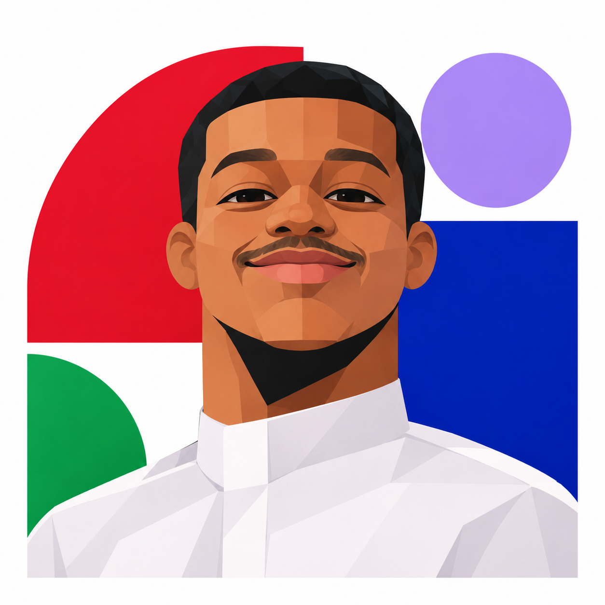

Illustrative interface · sample data
Challenge
Approach
Value
Inside the project
Project overview. Interface examples are illustrative; private operational records are not published.
OPERATIONS · ANALYSIS · DIGITAL TOOLS
Operations. Insight. Ideas into action.

Digital tools born from operational challenges.
Built around operations
Choose a project to explore its identity, purpose and approach.
Project overview. Interface examples are illustrative; private operational records are not published.
From customer service and multi-site restaurant operations to e-commerce fulfillment and practical digital tools.
Choose a capability to see how I apply it in my work.
Choose a word and see the character respond.
Hi, I’m Faisal. Explore my work and journey.
Explore my work